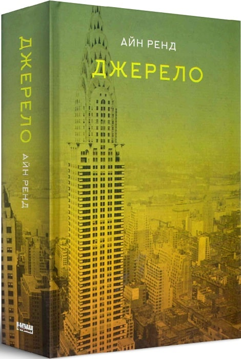
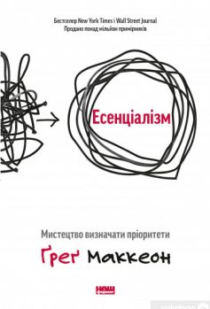

Уявіть, що ви народилися у першій половині ХХ століття в США і раптом виявили, що люди, маючи радіо, газети, кораблі та літаки, досі живуть у будинках, зведених у грецькому стилі. Вони не сприймають нічого, крім фронтонів, химерних статуеток, карнизів та колон… Відмовляються бачити прогрес. Саме в такій ситуації опиняється головний герой роману — талановитий архітектор Говард Рорк. Він навіть не намагається відкрити оточенню очі на абсурдність ситуації, а просто виконує свою роботу. Таких як він — тих, хто має власну думку — суспільство кличе егоїстами, вважає «хворими» і неправильними. Перед ним зачиняють двері і всіляко намагаються виштовхнути подалі від епіцентру архітектурного життя

Чи відчували ви коли-небудь, що викладаєтеся на повну, але не отримуєте бажаного результату? Перепрацьовуєте й водночас не займаєтеся тим, чим потрібно?.. Ґреґ Маккеон пропонує власну концепцію Есенціалізму, завдяки якій ви навчитеся помічати найсуттєвіше, відкидати непотрібне й устигати найважливіше. Це оновлене видання «Коротко і по суті. Мистецтво визначати пріоритети».
Леді Джоан, головна героїня роману, через несприятливу погоду змушена лишитися наодинці з найсокровеннішими думками. На краю цивілізації в безкінечній пустелі вона, немов у ритриті, дізнається про те, чого не розуміла й не хотіла усвідомити, зокрема й себе. Переосмислення відчуттів й власного життя, передусім стосунків з найріднішими, змінює її ставлення до тих, хто поруч і тих, хто вплинув на звичний неспішний перебіг подій, які зринули в пам’яті. Леді Джоан прагнула в цій подорожі побачити незнаний далекий світ, провідати доньку в Багдаді, відволіктися від рутини, але, зрештою, чи несподіванки є просто несподіванками, а не закономірністю?..